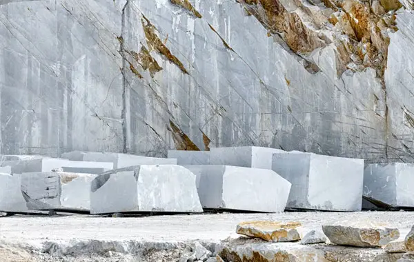
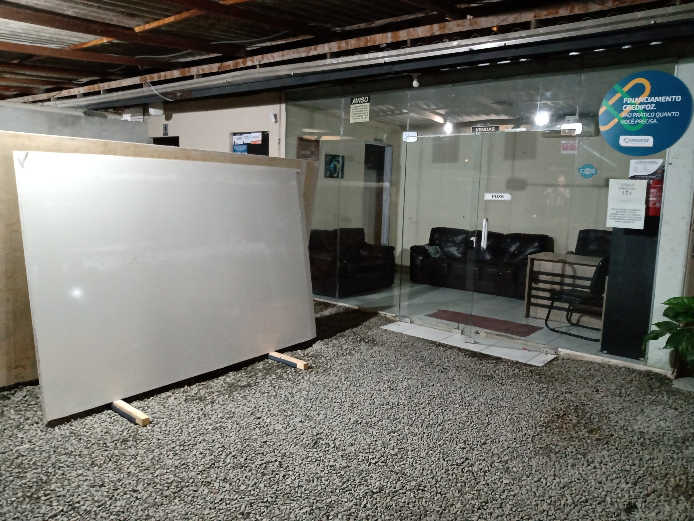
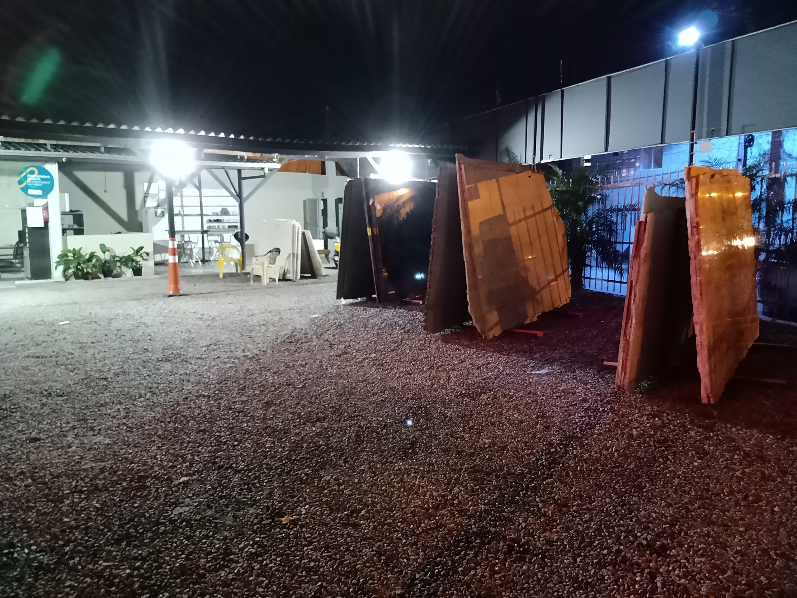

Seleção consciente de materiais
- Indicação mais adequada para o uso real de cada ambiente.
- Valorização da vida útil e da manutenção correta das superfícies.
- Orientação para evitar escolhas desalinhadas com o projeto.
A Atelier das Rochas usa a sustentabilidade como parte da sua cultura e entende que isso também precisa aparecer no ambiente digital, no atendimento e na forma como a empresa se apresenta ao mercado.

Para a empresa, sustentabilidade não é só um tema institucional: é uma forma de reforçar confiança, mostrar evolução e evidenciar uma postura moderna diante de clientes, parceiros e colaboradores.


O site foi pensado para aproximar o cliente da estrutura, da curadoria de materiais e da forma como a Atelier das Rochas trabalha.